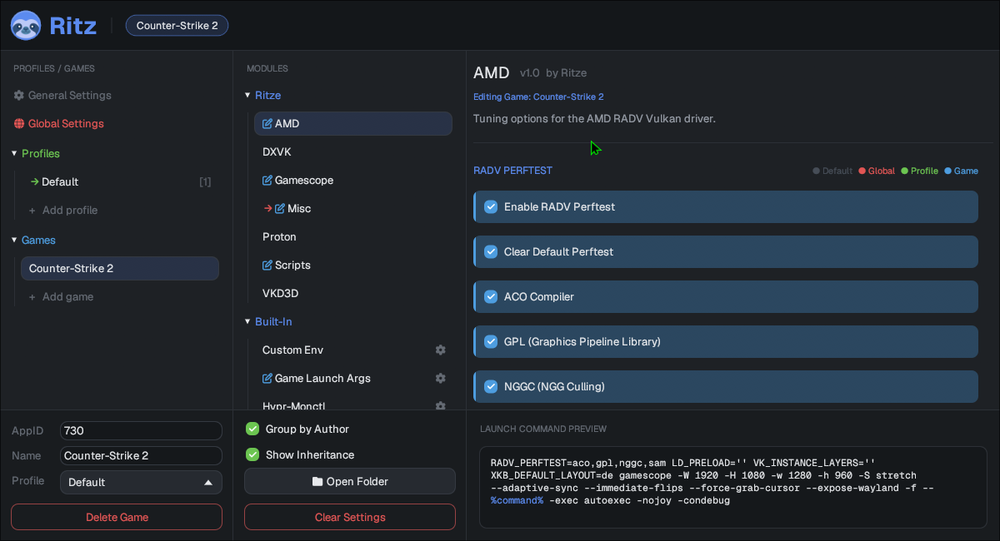

what it solves
Linux gaming means juggling RADV_PERFTEST, gamescope flags,
VKD3D_CONFIG, Proton sync backends, frame-gen quirks, and a wall of
VAR=value %command% launch options — per game, by hand. ritz replaces all
of that with a single launch option and a settings window. Toggle what you want; ritz
assembles the exact command at launch and stays out of the way.
01 · one launch option
Set ritz %command% once in Steam's launch options. Everything else is configured in the GUI.
02 · layered scopes
Settings cascade global → profile → game, each overriding the last.
03 · JSON modules
Every feature — Gamescope, AMD, Proton, DXVK, VKD3D, and more — is a small JSON manifest. Edit the bundled ones or drop in your own.
04 · live preview
The GUI shows the exact assembled launch command as you toggle options, or dry-run it with ritz --print (outside real Steam, pair it with RITZ_APPID=<ID>).
quickstart
You need Rust (the cargo build tool) and git.
On most distros: sudo pacman -S rust git (Arch),
sudo apt install cargo git (Debian/Ubuntu), or install Rust via
rustup.rs.
- Get the code
git clone https://github.com/Ritze03/ritz.git cd ritz - Build it (Linux only) — takes a few minutes the first time
cargo build --release - Install the binary system-wide
sudo install -Dm755 target/release/ritz /usr/bin/ritz - Set the Steam launch option — right-click the game →
Properties → Launch Options
ritz %command% - Launch. The first time, a short wizard asks for a name and an optional profile, then starts the game. After that you get a splash on every launch: W launch · E edit · Q cancel.
ritz with no
arguments any time to open the full GUI. Dry run:
ritz --print %command% prints the assembled command without launching.
Real Steam sets $SteamAppId for you; testing by hand outside Steam
needs RITZ_APPID=<ID> ritz --print %command% instead.non-Steam games
For non-Steam shortcuts (or anything ritz can't identify from Steam), give it a stable id:
RITZ_APPID=my-game ritz %command%Running ritz %command% on an unknown game walks you through setting
this up and shows the exact launch option to paste.
where to next
usage guide →
The splash, the settings GUI, scopes & colors, profiles, and maintenance actions.
extension reference →
Write your own modules: the full JSON schema with example snippets for every block.